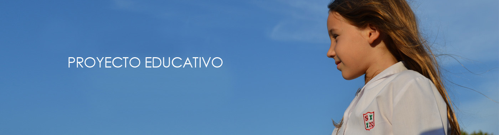

PROYECTO EDUCATIVO
El estilo pedagógico de la entidad está sustentado en los valores de la persona y busca que el alumno pueda lograr lo mejor de sí mismo, aprendiendo a asumir responsabilidades, enriqueciendo sus propios talentos y apostando a que sus elecciones cotidianas sean libres e independientes. Los niveles de enseñanza han sido estructurados y articulan entre sí de acuerdo a un cuidadoso estudio de las necesidades de los alumnos en las distintas etapas de su desarrollo. El inglés se impulsa como segundo idioma, lo permite que los estudiantes desarrollen esa lengua al igual que en su idioma de origen, lo que apunta a desarrollar habilidades de comunicación, comprensión y producción, tanto en la expresión oral como en la escrita.
- Trabajamos permanentemente en la formación integral de la persona, buscando un equilibrio entre la mente, el cuerpo y el espíritu.
- Fomentamos diferentes actividades y tipos de aprendizajes relacionados al desarrollo de las áreas de conocimiento que incluyen la cultura general, los contenidos específicos de las distintas áreas o asignaturas, y fundamentalmente, el despliegue y el desarrollo de talentos, a través habilidades de pensamiento y la adquisición de diferentes competencias.
- Favorecemos el bilingüismo trabajando el cincuenta por ciento del día escolar en inglés, con el objetivo de que nuestros alumnos alcancen una fluidez en el uso de esta Lengua, tanto de forma oral como escrita.
- Trabajamos los vínculos personales, la práctica de valores aplicados a la vida diaria, el buen desarrollo de las relaciones humanas y la expresión de los sentimientos promoviendo el diálogo, la reflexión, la responsabilidad y la autocrítica.
- Desarrollamos el gusto y la sensibilidad por el arte a través del teatro, la música y la plástica, conquistando la satisfacción del propio saber y la del “poder hacer” a través del desarrollo de la investigación, la creatividad y el autoconocimiento
- Estimulamos la práctica deportiva, para mejorar las aptitudes y las cualidades físicas de nuestros alumnos, pero fundamentalmente como medio para adquirir y fomentar virtudes y valores como la camaradería, el ‘’fair play’’, el trabajo en equipo, la amistad y la auto superación
- Proponemos salidas didácticas, viajes de estudio, campamentos y giras deportivas que proporcionan realismo a la curricula, permiten construir nuevos saberes que profundizan los adquiridos dentro del aula y contribuyen a afianzar la convivencia entre pares, la práctica de valores y el pleno contacto con el entorno.
- Preparamos a los alumnos para que obtengan una educación pre-universitaria, desarrollando la capacidad de liderazgo, autogestión proyectos y trabajando con conciencia social-comunitaria.
- Mantenemos diariamente un ambiente estéticamente agradable, prolijo y limpio
- Trabajamos en un clima de contención, calidez ,alegría y solidaridad.